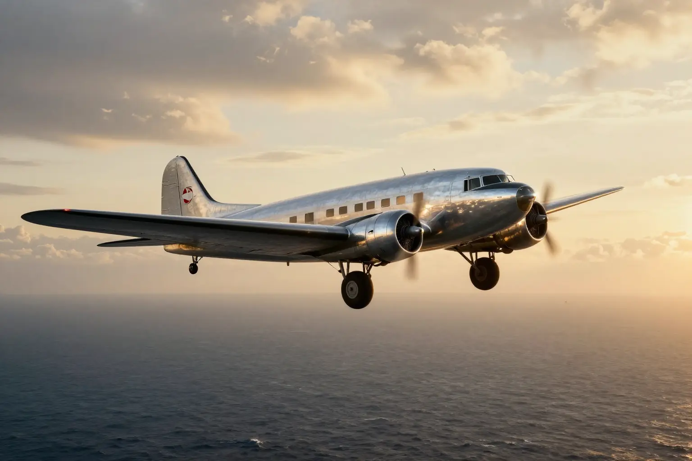

The Mary Celeste: History's Greatest Ghost Ship Mystery

It was December 5, 1872, by the ship's clock at sea. (Some sources say December 4, because sailors counted days in a different way.) A small sailing ship from Nova Scotia called the Dei Gratia was crossing the grey North Atlantic Ocean. She was about 400 miles east of the Azores, a group of islands far out at sea. Then her crew saw something that should not have been there. It was another ship, drifting. Some of its sails were up. It swung slowly in the rough water, and nobody was steering.
The Dei Gratia sailed closer. Her captain was David Morehouse. The drifting ship was the Mary Celeste, an American ship of the kind called a brigantine. She had left New York Harbor about eight days before the Dei Gratia. She was going to Genoa, Italy, with a cargo of alcohol for use in factories.
Her captain was Benjamin Spooner Briggs. He had sailed from New York with his wife, his small daughter, and seven crew.
Now the Mary Celeste floated on the open sea with nobody on board. There was no captain, no crew, and no passengers. The ship's only lifeboat, a small boat called a yawl, was gone. The captain's logbook, the daily record of the voyage, stopped suddenly on November 25. That was about ten days earlier.
But the ship herself was fit to sail. Most of the cargo was still there. The ship had enough food and water for about six months. There were no signs of a fight. Nothing showed an attack by pirates or a mutiny, which is when a crew turns against its captain. Ten people, one of them a child of two, had simply vanished from the ocean.
To understand the mystery, it helps to know the world of the 1870s. It was the last part of the Age of Sail. Wooden sailing ships still carried much of the world’s goods across the oceans. Steamships were only starting to take their place.
The North Atlantic was one of the busiest sea routes on Earth. Ships carried goods, people, and raw materials between Europe and the Americas. Europe was filling with factories, and the Americas were growing fast.
A brigantine was a ship with two masts. The front mast had square sails. The main mast had sails that ran along the length of the ship. Ships like the Mary Celeste did the everyday work of this trade. They were not grand or special. The route from New York to the Mediterranean Sea, past the Azores, was well used.
Ships were lost at sea quite often. But usually they were lost completely. Storms sank them, rocks wrecked them, or fire destroyed them. This case was different. The ship was whole and the cargo was still there, but everyone on board was missing. It seemed to have no easy explanation.
The Mary Celeste did not always have that name. She was launched in 1861 at Spencers Island, Nova Scotia, at the yard of a shipbuilder named Joshua Dewis. Her first name was Amazon. She was about 99 feet long when she was built. After a major rebuild in 1872, she was 103 feet long and weighed about 282 tons.
From the start, the ship had bad luck. Her first captain fell ill and died soon after taking command. In 1867, a storm drove her onto the shore of Cape Breton Island in Nova Scotia. The damage was so bad that her owners left her there as a wreck.
Then she was saved and sold to American owners. They rebuilt her and registered her in New York as the Mary Celeste. Most sources give the year as 1868 or 1869. Benjamin Briggs took command in 1872. By then she was eleven years old. She was sound enough, but she had a history of bad luck behind her.
Briggs was 37 years old. He was born in Wareham, Massachusetts. Many accounts describe him as an experienced captain who took his duty seriously. He had a son named Arthur, who was left at home with his grandmother.
For the voyage to Genoa, Briggs had a crew of seven. They included the first mate, Albert G. Richardson, and a second mate named Andrew Gilling. There was also a steward and four sailors.
Briggs also brought his wife, Sarah Elizabeth Briggs. Her family name before she married was Cobb. Their daughter Sophia Matilda, aged two, came too.
The cargo was 1,701 barrels of raw alcohol for industry. It was not for drinking.
The Mary Celeste left New York Harbor on November 7, 1872. Eight days later, on November 15, the Dei Gratia left for Gibraltar on roughly the same course.
On December 5, 1872, men from the Dei Gratia climbed aboard the Mary Celeste. They were led by the first mate, Oliver Deveau. What they found was strange. The ship was in fair shape, and yet something was badly wrong.
The ship rolled in the waves with nobody at the wheel. Some sails were still set. Others hung loose or were gone.
Below the deck, things were untidy but not wrecked. Personal things were still in the captain’s cabin. Nothing showed a fight. The hatches on the deck were open in some places and shut in others.
The last entry in the logbook was dated 8:00 in the morning on November 25, 1872. It gave the ship’s position as off Santa Maria Island in the Azores. That was nearly 400 sea miles from where the Dei Gratia found her.
But some things were missing. Most of the ship’s papers were gone. So were the captain’s tools for finding his position at sea. The only lifeboat had been launched and was nowhere to be seen.
There were other odd details. A pump may have been taken apart, as if someone had been working on it. One later documentary reported this. There was about 3.5 feet of water in the hold. That was not alarming for a ship of her size. The compass case had shifted, and its glass cover was broken.
The cargo told an important part of the story. Of the 1,701 barrels of alcohol, nine were found empty when the ship reached Genoa. Some people have linked that detail to the mystery.
This kind of alcohol turns into vapor very easily, and it catches fire very easily. If barrels had leaked, the hold could have filled with vapor that might explode. But the ship did not show signs of fire. Whatever happened to the Mary Celeste, she had not burned.
So what made ten people leave a ship that could still sail, in the middle of the Atlantic? Something may have frightened them badly. They left behind their belongings and their food and water. They chose a small open boat on the open sea instead of staying on board.
The crew of the Dei Gratia sailed the Mary Celeste to Gibraltar. There, in December 1872, a British court for sea matters held a hearing. It was a Vice Admiralty Court. Its job was to decide the salvage, which is the reward for saving a ship.
Frederick Solly-Flood, the Attorney General of Gibraltar, took a leading part. He was full of suspicion, and he asked hard questions. His ideas shaped the first stories that people told about the mystery.
From the start, Solly-Flood suspected a crime. One idea of his was that a crew member might have drunk some of the alcohol and then turned on the others. He also looked hard at the men of the Dei Gratia.
He ordered careful searches of both ships. He questioned the Dei Gratia’s crew for a long time. But the court found no proof of foul play. The cargo was still there, so theft was ruled out.
In the end, the court gave the Dei Gratia’s crew a payment of £1,700. That was about one-fifth of the combined value of the ship and cargo. Some people at the time thought the award was too small.
In January 1884, twelve years after the ship was found, a young writer published a short story. His name was Arthur Conan Doyle, and he was not yet famous. The story was called “J. Habakuk Jephson’s Statement.” It appeared in the British magazine Cornhill Magazine.
The story was fiction based on the Mary Celeste. It was told by a made-up survivor. In it, a man who had been a slave and wanted revenge took over the ship. Doyle changed key details. He called the ship “Marie Celeste.” He set the voyage in 1873, from Boston to Lisbon, and put passengers on board.
But Doyle wrote it like a real report, and some readers may have believed it was true. The story added to the legend of the ship. It added details such as meals laid out on the table and tea boiling on the stove. None of that is part of what really happened.
The real record is plainer. The Gibraltar court found no blood and no sign of violence. A good deal of what people believe about the ship comes from fiction and retelling, and not from the record.
Many explanations have been offered. One comes from Anne MacGregor, a maker of documentary films. In a documentary from about 2007, she studied the case again. She looked at the ship’s old papers, including the original logbook.
MacGregor concluded that Briggs may have thought that the ship was sinking. A pump had been taken apart, and that would hide how much water was in the hold. The logbook also suggested that Briggs had placed the ship about 120 miles west of where she really was. That mistake may have come from a faulty chronometer, a very exact clock used for finding a ship’s position at sea.
A second idea is about the alcohol. Some people think that nine leaky barrels let alcohol vapor fill the hold. Others think an earthquake at sea made the alcohol leak. The crew may have feared an explosion. In 2006, a chemist named Andrea Sella tested this. He built a model of the hold with paper boxes for barrels and used a gas called butane.
His test made a big flash and a blast of air. But it left no burn marks. So a blast like this could have scared the crew without leaving a sign of fire.
In either case, the plan may have been simple. Briggs may have ordered everyone into the lifeboat for safety. One common idea is that the lifeboat was tied to the ship by a rope. They would wait nearby until the danger had passed.
Perhaps the rope broke. Perhaps a sudden storm pulled the lifeboat away. Perhaps the wind filled the ship’s sails, and she moved faster than the lifeboat could follow. Nobody knows. The ten people in the lifeboat were left alone in the middle of the Atlantic. The Mary Celeste sailed on without them.
The ship’s story did not end there. After the hearing, she went back to her owners. She kept sailing for about twelve more years under other owners.
Her luck did not get better. Finally, on January 3, 1885, her captain, Gilman Parker, ran her onto a reef near Haiti on purpose. The cargo was almost worthless, but it was insured for $30,000. He wanted the insurance money.
The plot came to light, and the people involved had to pay back the money. So the ship’s own story ended in a trick for money. What happened to her crew stayed a mystery. Her name still stands for things that cannot be explained.
The Mary Celeste is one of the best-known ghost ships. There is a good reason. A sound ship was found drifting. Her cargo was there, her food was there, and there were no signs of violence. Yet every person on board was gone.
No single theory explains every detail. The pump, the chronometer, the nine empty barrels, and the missing lifeboat each fit one idea or another. Briggs was an experienced captain. So it is easy to believe that he ordered a careful escape, and that something went wrong.
But we will never know for certain. The rope, if there was one, rotted away long ago. The lifeboat, if there was one, sank beneath the waves. Ten people sailed from New York on November 7, 1872. They took their story with them, to the bottom of the Atlantic or to a grave with no marker.
What is left is the mystery. A ship sailed on with no one to tell her story. What happened on board? The grey water has never given an answer.
References & Further Reading
Editorial note: Everyone agrees that the ship was found drifting with nobody on board, and that no sign of violence was found. What happened to the ten people is still argued about, and no theory explains every detail. See our Editorial Policy.